Les murs meublés, à l'essai
Drapeau --murs-meubles-essai, éteint par défaut. Carte : le Cloître, cadrage du jeu (1920×1080,
lacet 45° B). « Sans » et « avec » sont pris au MÊME instant (jeu en pause, l'essai caché puis montré). Les loupes sont
agrandies trois fois au plus proche : ce sont les pixels du jeu. Rendu logiciel du cloud : les couleurs et les comptes de
pixels valent, pas la cadence.
Les portes rivetées
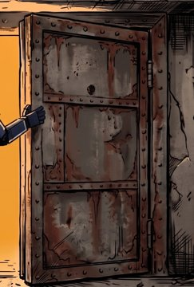
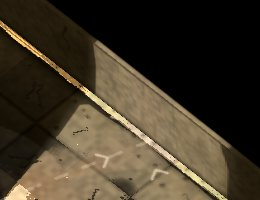
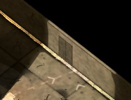
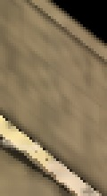
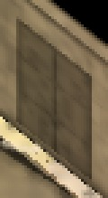
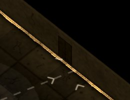
| mesure | torches allumées | torches éteintes |
|---|---|---|
| emprise à l'écran (px) | 13 923 | 13 924 |
| dont sur une face éclairée | 13 923 | 13 924 |
| dont sur un pixel noir (A et A2) | 0 | 0 |
| pixels changés par l'essai | 13 923 | 13 924 |
| dont hors de l'emprise | 0 | 0 |
| plus clairs que sans (luminance +0,5) | 2 | 2 |
| un canal +2 (pour mémoire) | 0 | 0 |
| noirs allumés (0 → plus, A = A2 = 0) | 0 | 0 |
| noirs allumés (seuil 7,5/255) | 0 | 0 |
| clarté avec / sans, sur l'emprise éclairée (médiane) | 0.73 | 0.729 |
| idem, maximum | 1.121 | 1.121 |
| bruit : A contre A2 | 0 | 0 |
plus clair par endroits · noir resté noir
Les grilles
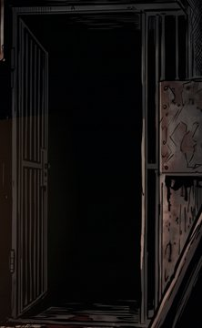
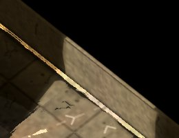
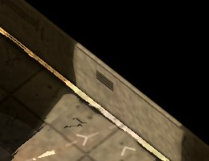
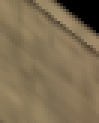
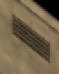
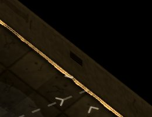
| mesure | torches allumées | torches éteintes |
|---|---|---|
| emprise à l'écran (px) | 12 482 | 12 482 |
| dont sur une face éclairée | 12 465 | 12 465 |
| dont sur un pixel noir (A et A2) | 17 | 17 |
| pixels changés par l'essai | 12 465 | 12 465 |
| dont hors de l'emprise | 0 | 0 |
| plus clairs que sans (luminance +0,5) | 2 | 2 |
| un canal +2 (pour mémoire) | 0 | 0 |
| noirs allumés (0 → plus, A = A2 = 0) | 0 | 0 |
| noirs allumés (seuil 7,5/255) | 0 | 0 |
| clarté avec / sans, sur l'emprise éclairée (médiane) | 0.729 | 0.729 |
| idem, maximum | 1.121 | 1.121 |
| bruit : A contre A2 | 0 | 0 |
plus clair par endroits · noir resté noir
Les boîtiers électriques
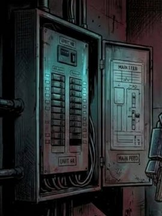
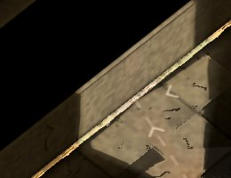
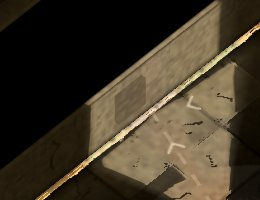
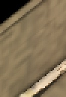
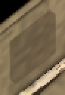
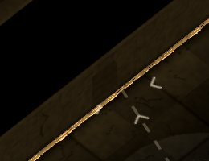
| mesure | torches allumées | torches éteintes |
|---|---|---|
| emprise à l'écran (px) | 8 690 | 8 691 |
| dont sur une face éclairée | 8 690 | 8 691 |
| dont sur un pixel noir (A et A2) | 0 | 0 |
| pixels changés par l'essai | 8 690 | 8 691 |
| dont hors de l'emprise | 0 | 0 |
| plus clairs que sans (luminance +0,5) | 22 | 22 |
| un canal +2 (pour mémoire) | 9 | 9 |
| noirs allumés (0 → plus, A = A2 = 0) | 0 | 0 |
| noirs allumés (seuil 7,5/255) | 0 | 0 |
| clarté avec / sans, sur l'emprise éclairée (médiane) | 0.729 | 0.724 |
| idem, maximum | 1.315 | 1.315 |
| bruit : A contre A2 | 0 | 0 |
plus clair par endroits · noir resté noir
Les faisceaux de câbles serrés
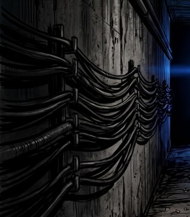
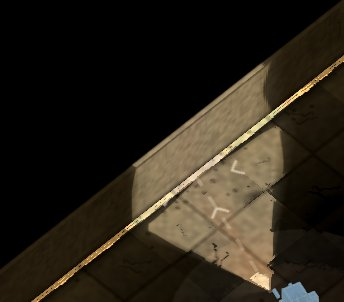
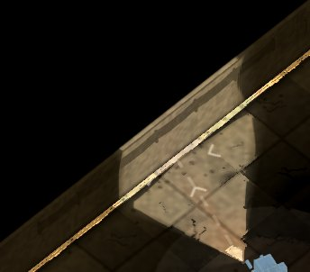
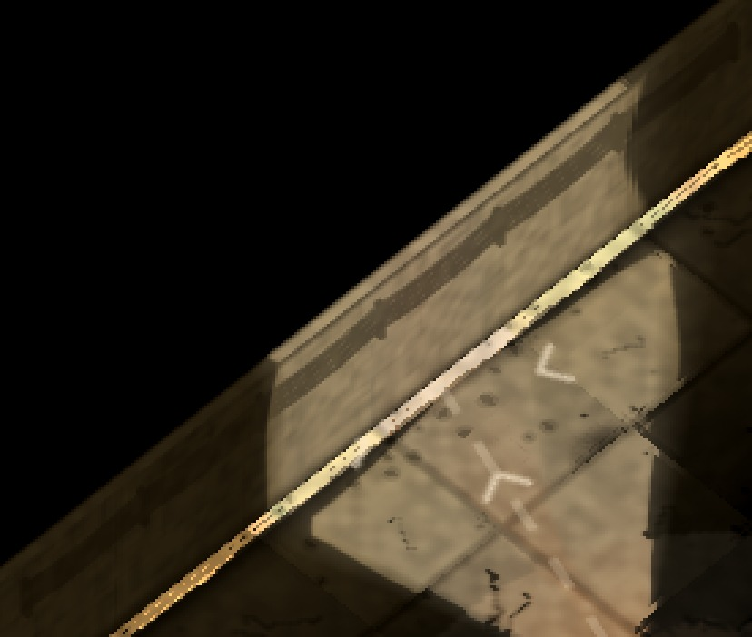
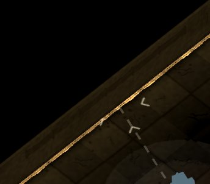
| mesure | torches allumées | torches éteintes |
|---|---|---|
| emprise à l'écran (px) | 12 483 | 12 483 |
| dont sur une face éclairée | 12 243 | 12 243 |
| dont sur un pixel noir (A et A2) | 232 | 232 |
| pixels changés par l'essai | 12 245 | 12 246 |
| dont hors de l'emprise | 0 | 0 |
| plus clairs que sans (luminance +0,5) | 13 | 13 |
| un canal +2 (pour mémoire) | 11 | 11 |
| noirs allumés (0 → plus, A = A2 = 0) | 0 | 0 |
| noirs allumés (seuil 7,5/255) | 0 | 0 |
| clarté avec / sans, sur l'emprise éclairée (médiane) | 0.722 | 0.729 |
| idem, maximum | 1.381 | 1.381 |
| bruit : A contre A2 | 0 | 0 |
plus clair par endroits · noir resté noir
La symétrie J1 / J2 à 45° B
Écran scindé : J1 devant un faisceau, J2 à son image par le demi-tour, sa caméra à 225°. À droite, l'emprise des murs meublés en blanc : les deux moitiés doivent coïncider.
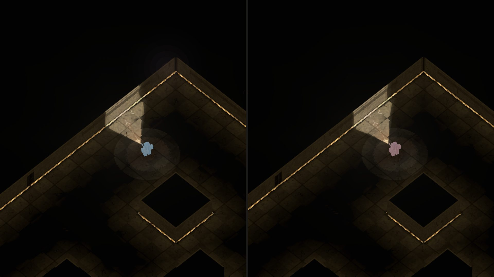
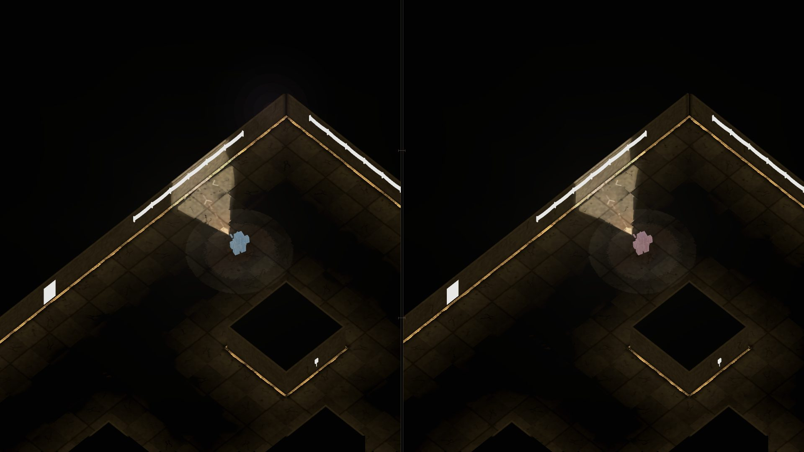
| mesure | valeur |
|---|---|
| emprise, moitié de J1 | 7 122 |
| emprise, moitié de J2 | 7 109 |
| pixels d'une seule moitié | 2 477 |
| idem, au meilleur recalage ±3 px | 511 |
| recalage x | -2 |
| recalage y | 0 |
| luminance moyenne sur l'emprise, J1 | 33.8 |
| idem, J2 | 33.45 |
La vue d'ensemble
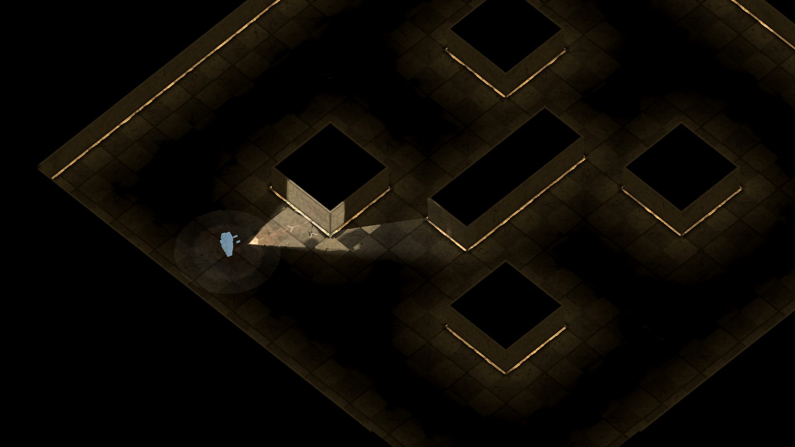